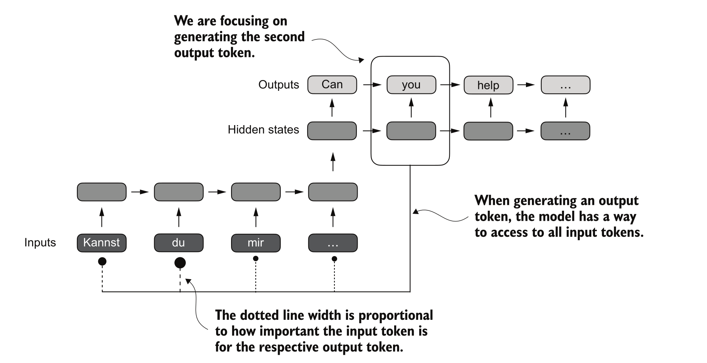

Transformers - I
Large Language Models : A Hands-on Approach
Language Modeling
- Given a sequence of tokens, predict the next token
- Example: A robot may not harm a ___ -> human
- [PROMPT] -> [MODEL] -> [PREDICTION]

Decoder-only Language Model
- A decoder-only language model is a stack of transformer decoder blocks

Decoder-only LLM : Output Side
- UnEmbed : The final vector is projected to vocabulary size and softmaxed to get token probabilities

RNNs + Attention
- Let Decoder access all Encoder hidden states
- Attend to relevant parts of input sequence when generating each output token [Bahdanau et al., 2015]

Parallel Processing
- Encoder : Process all input tokens simultaneously
- Decoder : Generate output tokens one by one, attending to encoder states and previous tokens
Self-Attention vs Encoder-Decoder Attention
Encoder–Decoder: One sequence attends to a different sequence (e.g., translation: output attends to the input sentence).
Self-attention: Sequence attends to itself (tokens attending to other tokens in the same sentence).
